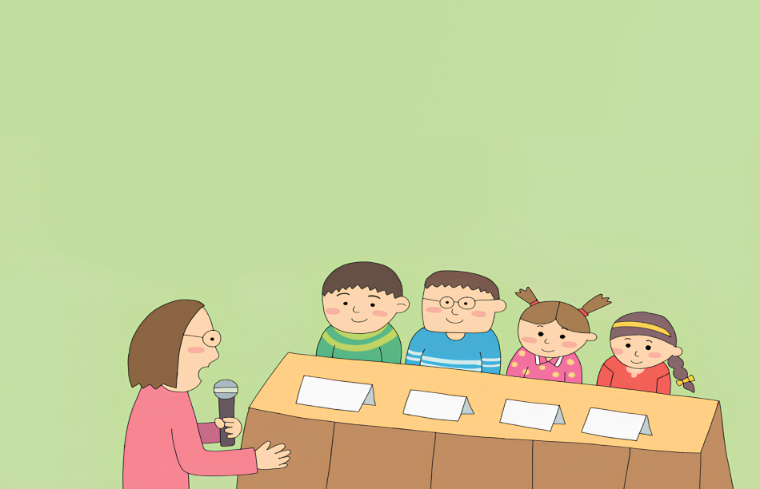

1번
다음 그림 속 강연자의 강연 내용 중 옳지 않은 부분을 찾아 고르세요.
1
지구촌 평화와 발전을 위해 우리나라 정부도 노력하고 있습니다.
2
대표적인 예로, 국제연합(UN)의 요청을 받아 평화 유지군을 파견합니다.
3
또한, 외교 활동을 통해 지구촌 평화를 위해 노력하기도 하며
4
한국 국제 협력단을 운영하여 봉사 및 구호 활동에 참여합니다.
5
그리고, 환경을 위해 ‘그린피스’를 운영하며 환경 문제에도 힘씁니다.
